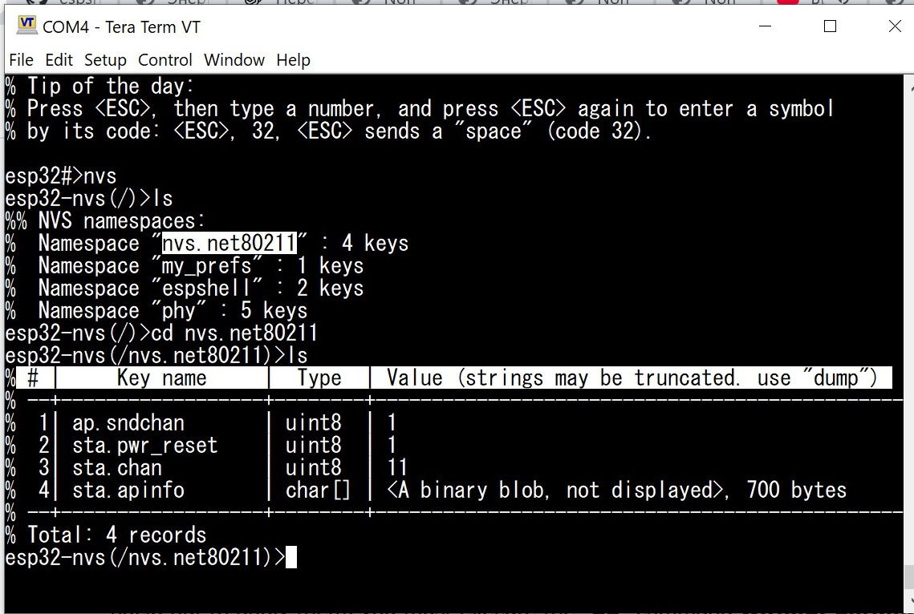

Although ESP-IDF (as well as Arduino Core) provide APIs for working with NVS (EEPROM and Preferences libraries in Arduino), there is no real EEPROM in Espressif SoCs. Instead, EEPROM is emulated in FLASH memory, and a special FLASH partition — usually named "nvs" — is used for this purpose.
ESP32 NVS is a flat key-value database with a single-level hierarchy: besides regular “key=value” pairs, each entry also belongs to a namespace. Keys can be reused if they belong to different namespaces. Throughout this document: the terms namespace, name space, NVS directory, and folder all refer to the same idea.
ESPShell lets you navigate NVS similarly to a filesystem: familiar commands such as ls, cd, rm are available. For creating and editing values you can use new and set. Import/export functionality is implemented via import and export, which save NVS to a text file that can be transferred between devices or NVS versions. The text file contains ESPShell commands that can be executed using exec or import (in fact, import is just an alias for exec).
To start the NVS editor, use the command nvs:
esp32#>nvs esp32-nvs(/)>The prompt indicates that the editor is active and you are now in the root directory. This “directory” contains only namespaces, which you can list using ls or enter with cd: think of namespaces as folders in a filesystem. To exit the NVS editor, use exit or press Ctrl+Z.

Fig. 1: Output of cd and ls commands
To view NVS data, three commands are used: cd, ls, and dump. The “dump” command is only necessary when ls is not enough: for example, ls shows only the first 42 characters of string values, and only the length and first 16 bytes of binary (blob) data.
The ls command accepts a single optional parameter — a namespace. If omitted, the namespace set by cd is used. When executed in the root directory, ls prints all namespaces:
esp32-nvs(/)>ls % NVS has 3 namespaces: % Namespace "espshell" : 2 keys % Namespace "phy" : 4 keys % Namespace "nvs.net80211" : 25 keys esp32-nvs(/)>If we enter, for example, the “phy” namespace (used by the WiFi driver) using cd /phy, and then run ls, we’ll get a table of keys and their values:
esp32-nvs(/)>cd phy esp32-nvs(/phy)ls % # | Key name | Type | Value (strings may be truncated. use "dump") % --+------------------+--------+----------------------------------------------- % 1| cal_address | char[] | <A binary blob, not displayed>, 1 bytes % 2| cal_data | char[] | <A binary blob, not displayed>, 1904 bytes % 3| cal_mac | char[] | <A binary blob, not displayed>, 6 bytes % 4| cal_version | uint32 | 701 % --+------------------+--------+----------------------------------------------- % Total: 4 recordsYou can also specify the namespace directly:
esp32-nvs(/phy)>ls ../espshell % # | Key name | Type | Value (strings may be truncated. use "dump") % --+------------------+--------+----------------------------------------------- % 1| tz | char* | UTC-07:00 % 2| hostid | char* | <empty> % --+------------------+--------+----------------------------------------------- % Total: 2 records esp32-nvs(/phy)>NOTE: The cd command does not require the namespace to exist. Running cd sdfgsdfg will not produce an error, and the namespace will be set to that name. When the first key is created in it, it will appear in ls /. If the namespace remains empty and you leave it (e.g. cd /), it is automatically deleted.
Since ls truncates long strings and hides blob contents entirely, the dump command is used to show full strings and to display binary data:
esp32-nvs(/phy)>dump cal_address 10 11 22 33 44 55 esp32-nvs(/phy)>Small data (up to 16 bytes — configurable via “var tbl_min_len”) is displayed as a single line; larger blobs use formatted output:

Fig. 2: Output of dump sta.apinfo command
mars@esp32-nvs(/espshell)>dump hostid % "hostid" = "mars" mars@esp32-nvs(/espshell)>Namespaces are entered using cd:
esp32-nvs(/)>cd espshell esp32-nvs(/espshell)>Relative paths are also supported:
esp32-nvs(/espshell)>cd ../phyThe root directory does not contain keys — only namespaces. NVS has only a single hierarchy level, so “directories inside directories” do not exist.
| Command | Description and examples |
|---|---|
| ls [PATH] |
List a namespace (or all namespaces if run in the root directory): esp32-nvs(/)>ls %% NVS namespaces: % Namespace "espshell" : 2 keys % Namespace "phy" : 4 keys esp32-nvs(/)> esp32-nvs(/)>ls espshell % # | Key name | Type | Value (strings may be truncated. use "dump") % --+------------------+--------+----------------------------------------------- % 1| hostid | char* |If PATH is omitted, the current namespace (set by cd) is used. |
| cd PATH |
Change the current namespace to PATH. The namespace may already exist, or may not. If it does not exist, it is created automatically. This mechanism is used when creating new namespaces: run cd first, then add keys with new. If no keys are created and you leave the namespace, it is removed. esp32-nvs(/)>cd my_prefs esp32-nvs(/my_prefs)>ls % Namespace "my_prefs" (partition: "nvs") is empty or does not exist esp32-nvs(/my_prefs)>new TestKey char % Key created. Use "set TestKey ..." to set its value esp32-nvs(/my_prefs)> |
| dump KEY_NAME |
Display the value of KEY_NAME in the current namespace. Works for strings and binary data only.
esp32-nvs(/)>cd phy esp32-nvs(/phy)>dump cal_address % f0 9e 9e 22 7b 2c |
To create a new NVS entry (key), use the new command. It creates a new record and initializes it to 0 (for scalars) or to a one-byte buffer containing 0 (for arrays).
esp32-nvs(/)>cd phy esp32-nvs(/phy)>new Key unsigned char % Key created. Use "set Key ..." to set its value esp32-nvs(/phy)>In this example, we created a key named “Key” in the “phy” namespace. The data type is unsigned char. The command accepts normal C/C++ type syntax. Supported types:
The rm command deletes keys. Suppose we are in the “espshell” namespace:
esp32-nvs(/)>cd espshell esp32-nvs(/espshell)>Running rm tz removes the key tz from this namespace. To remove all keys in the current namespace, use “*”:
esp32-nvs(/)>cd espshell esp32-nvs(/espshell)> esp32-nvs(/espshell)>rm * % All keys in the namespace "espshell" were removed esp32-nvs(/espshell)>You can delete an entire namespace by specifying its path:
esp32-nvs(/phy)>rm ../espshellTo remove all keys everywhere, run rm * in the root (/) or execute rm / from any namespace. Deletion requires no confirmation — ESPShell will not ask “are you sure?”.
To set the value of an existing key (created earlier or via new), use set. It takes two parameters: key name and new value. Example — set the key “tz” in namespace “espshell” to “Hello World!”:
esp32-nvs(/espshell)>set tz Hello World! esp32-nvs(/espshell)>ls % # | Key name | Type | Value (strings may be truncated. use "dump") % --+------------------+--------+----------------------------------------------- % 1| hostid | char* |Binary data (char[]) uses C-style escapes: regular characters are used as-is, while% 2| tz | char* | Hello World! % --+------------------+--------+----------------------------------------------- % Total: 2 records esp32-nvs(/espshell)>
\r \n \t \v behave like C/C++, and sequences like \AB (hex digits) produce a byte 0xAB.
Example: set cal_data to bytes: 0x10, 0x20, "Hello", 0x20, 0x10:
esp32->nvs(/phy)set cal_data \10\20Hello\20\10
| Command | Description and examples |
|---|---|
| new KEY_NAME KEY_TYPE |
Create a key named KEY_NAME of type KEY_TYPE. KEY_TYPE may be any supported C scalar type (char, short, int, long, signed/unsigned, long long, char*, char[]). Example: create the key cal_address and assign the value 0011:2233:4455: esp32-nvs(/)>cd phy esp32-nvs(/phy)>new cal_address char[] % Key created. Use "set TestKey ..." to set its valueIf the key already exists, it is reset (strings become empty, arrays become one-byte zero arrays). |
| set KEY_NAME KEY_VALUE |
Set a new value for the key KEY_NAME. The KEY_VALUE argument is either a number (for scalar C-types) or a string/byte array. Strings and byte arrays are specified in exactly the same format. Example: change "cal_address" value to 00:11:22:33:44:55 esp32-nvs(/phy)>set cal_address \00\11\22\33\44\55 |
| rm PATH |
Delete keys or entire namespaces. The argument can be either a key name or a namespace name. |
This section is not yet complete. Please use the built-in ESPShell help system (the “?” command) to learn more about how to use it.